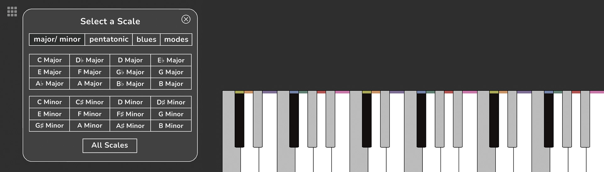
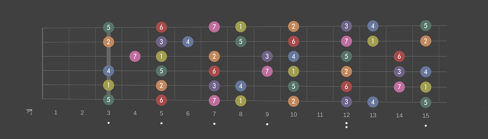

AudioTheory Grids – User Guide
Getting Started
You can launch AudioTheory Grids from the AudioTheory Grids.exe executable file (Windows) or AudioTheory Grids.app file (Mac OS). This loads up the main interface from where you can access the features detailed in this guide.
The main grid can be used to queue up notes that are then played in sequence when the grid is running. Each point horizontally corresponds to a beat and each point vertically is a note (low to high).
You can add items to the grid by pressing the desired position with the mouse. Click and drag to create a line – this will play a note with a duration of the line length.
Items added to the grid are assigned a colour automatically based on what note they are. This colour system can be used to easly reference notes across the pinao (and guitar fretboard!) diagrams that are part of the application.
Grid – Top Bar
Just above the grid is a row of tools that can be used to configure and control the grid. These are (left to right) as follows:
Bars – select the number of bars the grid should be. This will define the horizontal size of the grid.
Tempo – the speed (in BPM – beats per minute) at which the grid will play. Click and drag the slider or use the plus and minus keys to adjust.
Play/ Pause – the play button will begin grid playback. If the grid is already running then this will instead be a pause button.
Stop – the grid will stop playing and the playback position will revert back to zero.
Up and Down arrows – these can be used to shift all grid notes up or down on the grid.
Clear all button – clear all girds (both the visiable grid and any others loaded) with a single button press.
Copy and paste buttons – copy the current grid content or paste the current content from the clipboard. Standard Command-C/V (Mac) or Control-C/V (Windows) shortcuts also work.
Grid – Bottom Bar
Below the grid is a second row of options. The tools on the left are for configuring note and drum grids whilst the tools on the right are for recording a composition.
Note/ Drum Grids – press either 'notes' or 'drums' to view the corresponding grid. Each can be configured independently and then both will play in sync. There are also options here to mute or clear an individual grid, as well as plus/ minus buttons to cycle between the different instrument presets.
Recording – press the 'start recording' button to record your composition. Once complete, press the 'pause recording' button. This brings up options to either save (as a .WAV file) or clear the current recording.
Grid – Drum Grid
Configuring the drum grid is mostly the same as the main note grid, however the options labeled vertically are the available drum sounds instead of notes. Use the mouse to select these as required to build a drum beat.
Grid – Number Pad
The number pad can be toggled using the dotted grid icon on the right hand side of the screen.
The options here can be used to create multiple grids and configure how these are cycled through. The layout is built to resemble that of a keyboard number pad – if you have one of these you can use the keys to quickly control these settings.
Plus/ minus – use the plus and minus buttons to add more numbers to the pad. Each number corresponds to a new grid that can be configured.
Numbers 0–9 – press a number to load up the desired grid.
Return – number pad shortcut for play/ pause functionality.
Pediod/ full stop – number pad shortcut for stop functionality.
Del – clear the current grid only (note: this is not the same as the 'clear all' button which will clear all grids).
Asterisk (*) – shortcut for recording.
C – toggle 'copy' mode. When this is active (the c button has a pink square around it) new grids made with the plus button are duplications of the previous grid. When this is turned off, new grids start out completely blank.
Double arrow – toggle 'cycle playback' mode. When this is active (the button has a pink square around it) the grids are sequentially cycled through. When this is turned off, the current grid loops around on itself.
The on-screen piano accepts input from any of the following sources:
Mouse – click on the desired key to play it.
Keyboard – press the ‘keyboard’ button to register QWERTY input from your computer keyboard. There are two input modes labeled ‘1’ and ‘2’. In mode 1, a single octave is split across two keyboard rows. In mode 2, all the piano keys are sequentially mapped across the keyboard.
MIDI – connect an external MIDI device for full control of the keyboard. Note: you will need to sync up the onscreen octave value to the octave on your device for accurate input.
Using the buttons just above the keyboard you can select the instrument used for sound output as well as the current octave. There are also options to display or hide the keyboard note overlay as well as a 'lock to scale' feature where only notes selected in the scale will give audio feedback.
Play notes on the keyboard using any of the above input methods for visual and audio highlighting across the application relative to the applied settings. By default the piano keys highlight the corresponding row on the note grid. This can be configured in the application settings.
 Scale
Scale
The note boxes in the bottom left of the screen can be used to exclude specific notes from the keyboard, as well as the grid. The 'scale' button provides preset options for using a standard piano scale.
 The preset select popup also reveals the 'all chords' button which can be used to access the fullscreen scale selector
 Here you have a fullscreen view where you can play and choose between the scale presets.
Here you have a fullscreen view where you can play and choose between the scale presets.
When a scale preset has been selected, the note highlighting updates to be context dependant. For example, if C♯/ D♭ is to be presented as C♯ in the selected scale the highlight colour will be yellow (the colour used for C). But when it's to be displayed as D♭ it will highlight in orange (the colour for D).
 Notes that are excluded from the preset are removed from the grid. This means that the grid height is defined by the number of available notes chosen in the scale selector.
Notes that are excluded from the preset are removed from the grid. This means that the grid height is defined by the number of available notes chosen in the scale selector.
 Fretboard
Fretboard
The toggle just above the piano (and on the very left) can be used to swap between piano and fretboard views. When fretboard is selected the screen also displays playback across an interactive guitar fretboard.
Note playback is supported directly from the fretboard; this then maps back onto the piano diagram.
The fetboard tuning root tuning can be set from the options cog.
Apply a capo by pressing the desired number/ position on the fretboard.

There is a cog icon in the top right hand corner of the window that can be used to toggle the settings pannel view display. In here the application settings can be adjusted under the 'config.' tab and the guitar settings (including the main guitar tuning) can be adjusted in the 'guitar' tab.
The config. tab also includes options for saving or loading the current composition as a plain text file. This saves all composition data and all configured grids.